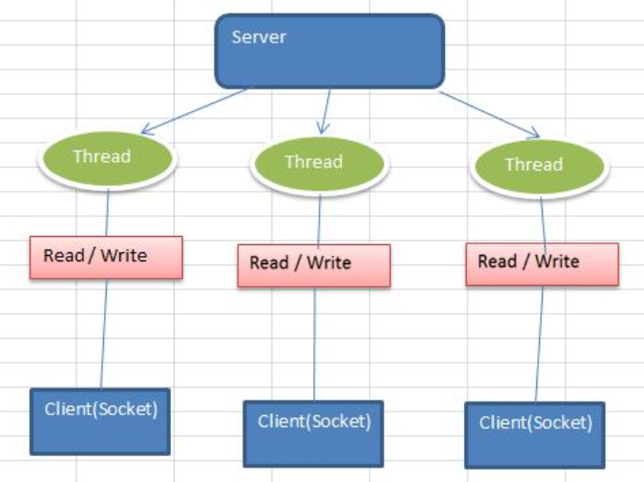
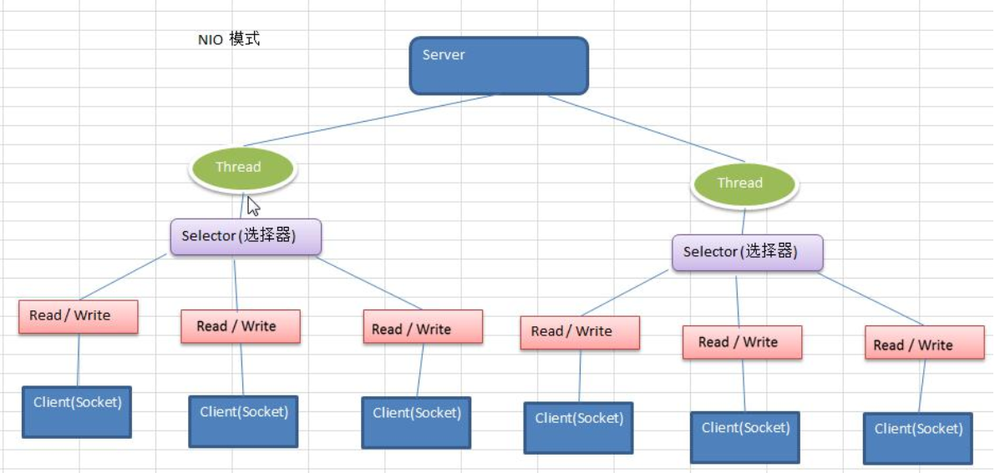
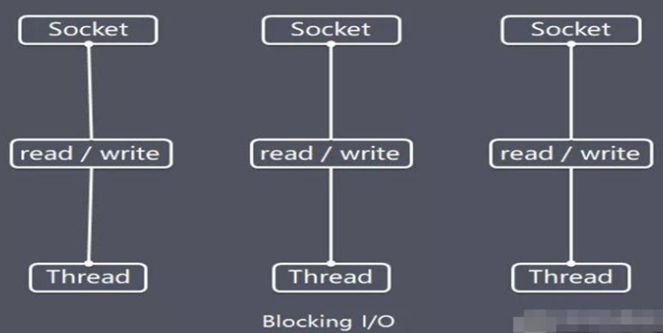

I/O 模型就是用什么样的通道进行数据的发送和接收，很大程度上决定了程序通信的性能！
Java共支持3种网络编程模型/IO模式：BIO、NIO、AIO，今天首先接触BIO模型.
I/O模型
模式介绍
Java共支持3种网络编程模型/IO模式：BIO、NIO、AIO.
Java BIO ： 同步并阻塞(传统阻塞型)，服务器实现模式为一个连接一个线程，即客户端有连接请求时服务器端就需要启动一个线程进行处理，如果这个连接不做任何事情会造成不必要的线程开销

注意：对于每一个client连接，server都生成一个线程来维护这段R/W操作
Java NIO ： 同步非阻塞，服务器实现模式为一个线程处理多个请求(连接)，即客户端发送的连接请求都会注册到多路复用器上，多路复用器轮询到连接有I/O请求就进行处理

注意：对于每一个client连接，都会注册到selector上，每一个selector都对应一个server线程
Java AIO(NIO.2) ： 异步非阻塞，AIO 引入异步通道的概念，采用了 Proactor 模式，简化了程序编写，有效的请求才启动线程，它的特点是先由操作系统完成后才通知服务端程序启动线程去处理，一般适用于连接数较多且连接时间较长的应用
适用场景
BIO方式适用于连接数目比较小且固定的架构，这种方式对服务器资源要求比较高，并发局限于应用中，JDK1.4以前的唯一选择，但程序简单易理解。
NIO方式适用于连接数目多且连接比较短（轻操作）的架构，比如聊天服务器，弹幕系统，服务器间通讯等。编程比较复杂，JDK1.4开始支持。
AIO方式使用于连接数目多且连接比较长（重操作）的架构，比如相册服务器，充分调用OS参与并发操作，编程比较复杂，JDK7开始支持。
BIO
BIO基本介绍
Java BIO 就是传统的javaio编程，其相关的类和接口在 java.io
BIO(blocking I/O) ： 同步阻塞，服务器实现模式为一个连接一个线程，即客户端有连接请求时服务器端就需要启动一个线程进行处理，如果这个连接不做任何事情会造成不必要的线程开销，可以通过线程池机制改善(实现多个客户连接服务器)。
BIO方式适用于连接数目比较小且固定的架构，这种方式对服务器资源要求比较高，并发局限于应用中，JDK1.4以前的唯一选择，程序简单易理解
BIO工作机制

BIO编程简单流程
服务器端启动一个ServerSocket
客户端启动Socket对服务器进行通信，默认情况下服务器端需要对每个客户 建立一个线程与之通讯
客户端发出请求后, 先咨询服务器是否有线程响应，如果没有则会等待，或者被拒绝
如果有响应，客户端线程会等待请求结束后，在继续执行
BIO应用实例
实例说明
使用BIO模型编写一个服务器端，监听6666端口，当有客户端连接时，就启动一个线程与之通讯。
要求使用线程池机制改善，可以连接多个客户端.
服务器端可以接收客户端发送的数据(telnet 方式即可)。
package uestc.zhangkx.bio;
import org.jetbrains.annotations.NotNull;
import java.io.IOException;
import java.io.InputStream;
import java.net.ServerSocket;
import java.net.Socket;
import java.util.concurrent.ExecutorService;
import java.util.concurrent.Executors;
/**
* BIOServer
* 用Bio写的server服务器，对于每一个连接都用线程去维护
* @author zhangkx
* @version 1.0
* @date 2020/9/25 20:57
*/
public class BIOServer {
public static void main(String[] args) throws IOException {
//线程池机制
//思路
//1. 创建线程池
//2. 如果有客户端连接，就创建一个线程，与之通讯（单独写一个方法）
ExecutorService newCachedThreadPool = Executors.newCachedThreadPool();
//创建ServerSocket
ServerSocket serverSocket = new ServerSocket(6666);
System.out.println("服务器启动了。。。");
while (true) {
//监听，等待 客户端 连接
final Socket socket = serverSocket.accept();
System.out.println("连接到一个客户端了。。。");
//线程池分配出线程
newCachedThreadPool.execute(()->handler(socket));
}
}
/**
* 编写一个handler方法
* @param socket
*/
public static void handler(@NotNull Socket socket) {
try ( InputStream inputStream = socket.getInputStream();) {
System.out.println("线程信息ID="+ Thread.currentThread().getId()+"名字"+Thread.currentThread().getName());
byte[] bytes = new byte[1024];
//循环读取客户端发送的数据
while(true){
System.out.println("线程信息ID="+ Thread.currentThread().getId()+"名字"+Thread.currentThread().getName());
int read = inputStream.read(bytes);
if(read!=-1){
//输出客户端发送的数据
System.out.println(new String(bytes,0,read));
}else {
break;
}
}
} catch (IOException e) {
e.printStackTrace();
}finally {
System.out.println("关闭client连接");
try {
socket.close();
} catch (IOException e) {
e.printStackTrace();
}
}
}
}
BIO问题分析
每个请求都需要创建独立的线程，与对应的客户端进行数据 Read，业务处理，数据 Write 。
当并发数较大时，需要创建大量线程来处理连接，系统资源占用较大。
连接建立后，如果当前线程暂时没有数据可读，则线程就阻塞在 Read 操作上，造成线程资源浪费